Galeria de Imagens
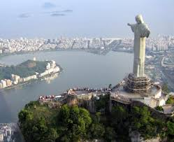
Cristo Redentor
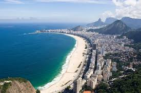
Praia de Copacabana
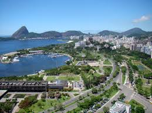
Aterro do Flamengo
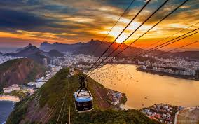
Bondinho
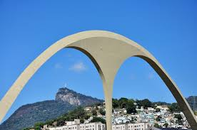
Apoteose
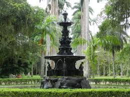
Jardim Botânico
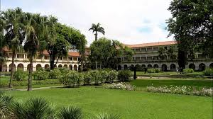
Fazenda Barão de Mauá
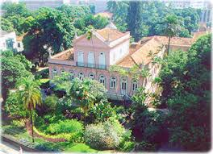
Fazenda de Café
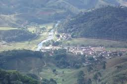
Visconde de Mauá
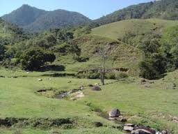
Barra do Piraí
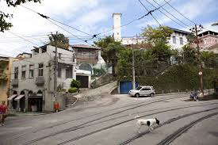
Conservatória
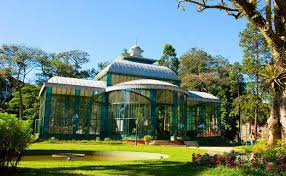
Palácio de Crsital